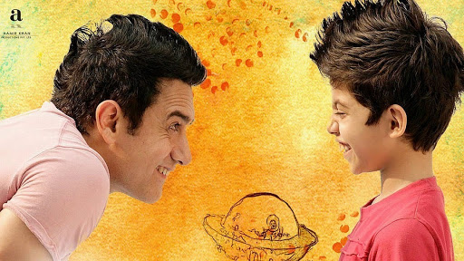
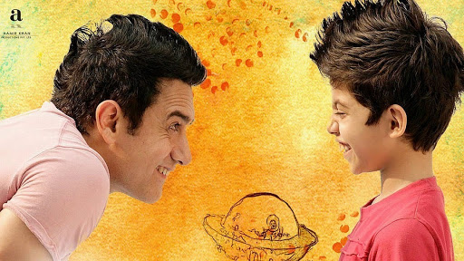

Фильмы:
 

"Звездочки на земле"
Жанр: драма
Год: 2007
Режиссеры: Аамир Кхан, Амол Гуптэ
Ишан Авасти — маленький мальчик, страдающий дислексией, из-за которой ему очень сложно дается учеба. Учителя считаю его умственно отсталым, а родители думают, что он лишь ищет отговорки, чтобы ничего не делать. Он давно привык к одиночеству, поскольку у него никогда не было друзей. После очередного провала экзаменов, Ишана переводят в школу-интернат, но и здесь он продолжает чувствовать себя никому не нужным. Через некоторое время его единственным другом становится учитель по рисованию Рам Никум, которому удалось распознать заболевание мальчишки. Именно он помогает Ишану научиться жить новой жизнью...
Писатели свободы
Жанр: биографические, драмы, криминальные
Год: 2007
Режиссеры: Ричард ЛаГравенес
Картина рассказывает о том, как можно своими собственными усилиями изменить группу подростков, которые катятся вниз. Кто то из них не закончит школу, кто то вовсе умрет, а кто то будет убивать и грабить. Им была дана путевка в жизнь. Подобный фильм не оставит равнодушных.
Сюжет фильма: молодая учительница приходит работать в школу, она полна вдохновения и в предвкушении предстоящей работы. Но все ее мечты рушатся в одно мгновение, когда она узнает, что ее класс почти не управляем. Дети в классе поделились на группы расовые и колониальные. А чему тут удивляться, в городке в котором живет главная героиня, Лонг-Бич, всегда присутствовала доля бандитизма. Но учительница не опуская руки упорно продолжает добиваться того, что бы ее ученики увидели достойное будущее...
Улыбка Моны Лизы
Жанр: мелодрамы, драмы
Год: 2003
Режиссеры: Майк Ньюэлл
Действие разворачивается в 1953 году, когда роль женщины в обществе была серьезно ограничена, а движение за равные права лишь набирало свои обороты. Молодой профессор Кэтрин Энн Уотсон начинает преподавать в престижном женском колледже Уэллсли, который, несмотря на хорошую репутацию в академических кругах, является местом, где успех обучения измеряется в том, насколько удачно его ученицы вышли замуж. Поощряя девушек стремиться к более просвещенному будущему, Уотсон бросает вызов администрации и вдохновляет своих учениц выходить за грани многочисленных ограничений, наложенных патриархальным обществом...
"Октябрьское небо"
Жанр: биографические, драмы, семейные
Год: 1999
Режиссеры: Джо Джонстон
В основу драмы «Октябрьское небо» легла биография инженера NASA – Хомера Хикэма. В 1957 году Хомер был учеником средней школы в городке Колвуд, что в штате Западная Вирджиния. Именно в это время Советский Союз впервые в истории человечества запустил спутник на околоземную орбиту, тем самым положив начало «Космической гонке». Такая новость очень сильно потрясла США, ведь СССР был противником в холодной войне.
Так же это событие произвело сильное впечатление и на Хомера, который просто заболел мыслью о космосе. Он принимает решение сконструировать собственную ракету, и даже обращается за помощью к известному ракетостроителю. Однако отец мальчика категорически против его замысла, ведь он простой работяга, который даже не хочет попытаться понять родного сына. Но Хомер не намерен отходить от намеченной цели, и пойдет на все, чтобы осуществить мечту.